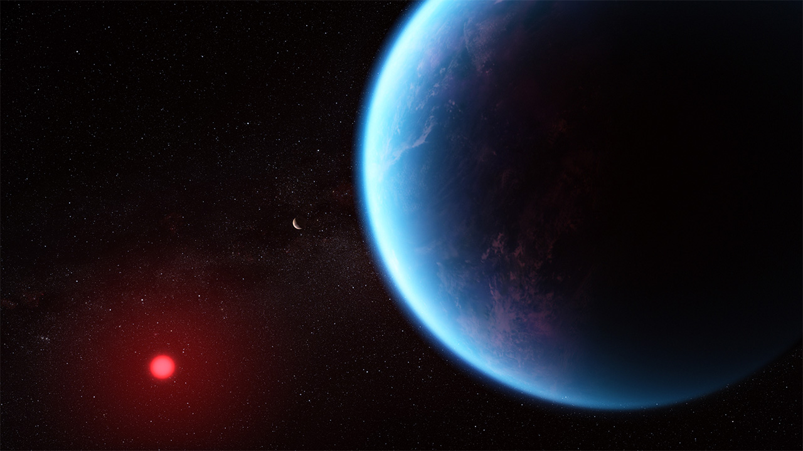
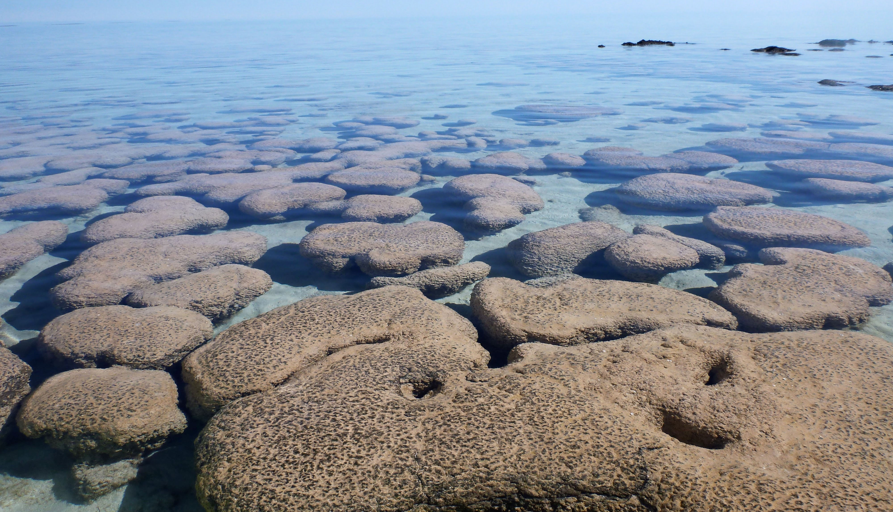
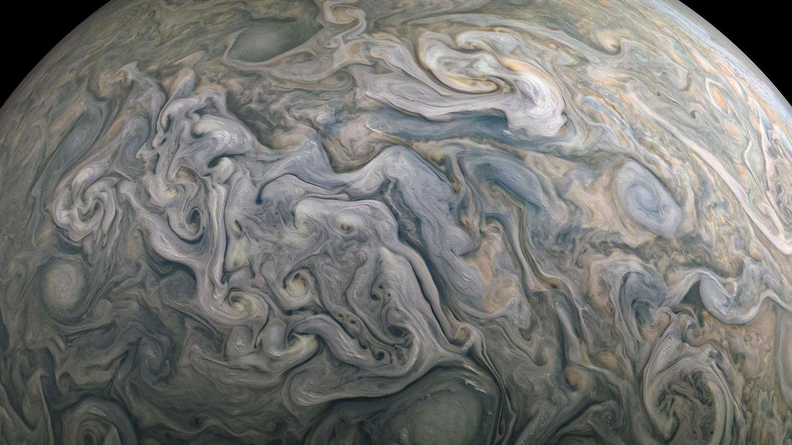
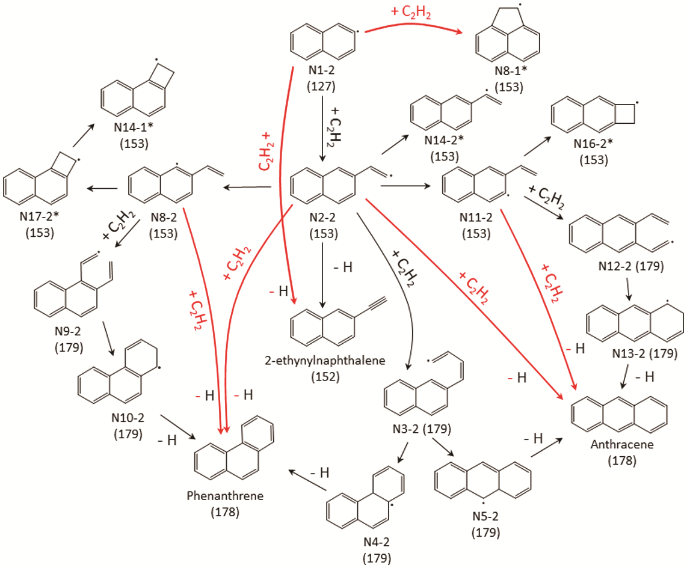

Home
CV
Research
Publications
Notes
Research
My vision is
Terraforming
, built upon four interconnected research pillars.

Exoplanet Atmospheres
Theory • Modeling • JWST

Origins of Life
Prebiotic Chemistry • Archean Atmosphere

Planetary Atmospheres
Gas Giant Planets • Terrestrial Planets

Physical Chemistry
Chemical Kinetics • Photochemistry